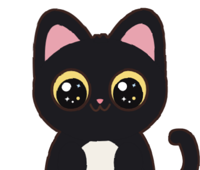
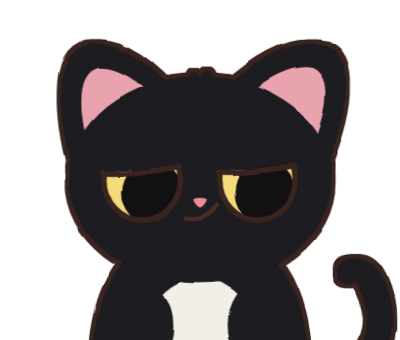
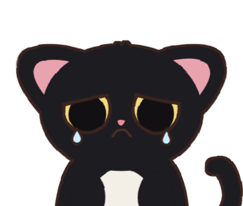
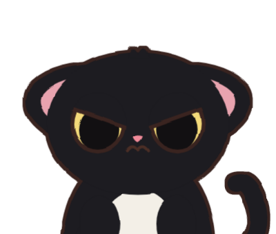
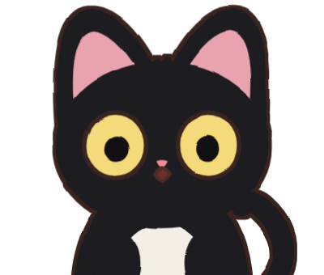
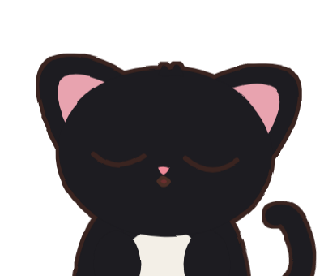

A desktop companion for macOS
A small cat that floats above your apps and presses the same keys you do, on its own little keyboard. It sparkles when you hit space, tears up when you backspace, and dozes off when you stop.
Try Space, Shift, Backspace or “?”. Stroke its head with your cursor.
Mochi lives in the corner of your screen, on top of every window, and reacts to everything you type.
Every key you press, Mochi’s paw lands on the same key on its keyboard. Type fast and it goes into a frenzy.
Eyes, ears and mouth change as you type: sparkles on space, a smirk on shift, a little tear on backspace.
Flat 2D, soft 2.5D, real 3D or the hand-drawn style you see here, in Tuxedo, Ginger, Cream, Snow, Silver, Blue, Cocoa, Ink or Peach.
See-through, always on top, even over full-screen apps and on every desktop. Drag it anywhere.
Stop typing and Mochi gets drowsy, then curls up to sleep. One keypress wakes it up again.
Stroke its head with your cursor and it purrs, eyes closed, ears relaxed. The eyes follow your mouse too.
A few of the moods you’ll see while you work.

Space
Sparkly eyes

Shift
A knowing smirk

Backspace
Oops, a tear

Lots of backspace
Grumpy, ears back

Typing fast
Wide-eyed, ears up

No typing
Nap time
To press the same keys you do, Mochi needs to see which keys you press, so macOS asks you to allow it under Accessibility.
That’s all it uses them for: which key it is, to move a paw. Nothing you type is saved, logged or sent anywhere, and Mochi never goes online.
For macOS on Apple Silicon (M1 and later) and Intel Macs.
Not sure which? Apple menu → About This Mac. “Chip: Apple M…” means Apple Silicon.
No. It only uses which key you pressed to move a paw and change its face, then forgets it. Nothing is written to disk or sent anywhere.
macOS hides your typing in other apps from everything unless you allow it. Without it, Mochi can only see keys typed into Mochi itself.
Mochi isn’t notarised by Apple yet, so macOS is being cautious. Right-click it and choose Open, or run xattr -cr /Applications/Mochi.app in Terminal once.
Drag it to any corner, shrink it, make it see-through, or turn on “Let clicks pass through” so clicks go straight to the app underneath.